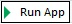
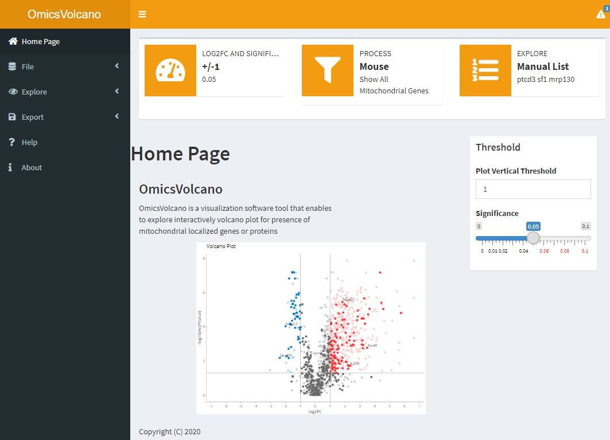
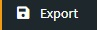
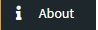

- Anyone with RStudio can use the OmicsVolcano software. If you don’t have RStudio follow the installation instructions. You need to install both R and RStudio. For R https://www.r-project.org/ and RStudio https://rstudio.com/products/rstudio/download/
- Download the OmicsVolcano software from GitHub repository as zip folder and . Unzip folder into a directory of your choice. For example, to the desktop
- Open RStudio
- Select R script VolcanOmix_AppV0.8.r (File – Open File … – App.r). To run the software, click 
- The software will appear as a webpage interface

Software Icons
File tab enables to upload users input file
Explore tab enables to select one of three plot`s functionality: (1)explore entire plot and visualize labels of any selelcted data points; (2) visualize a custom list of genes; (3) visualize a mitochodrial process(es)
 Export tab enables to download generated plots and tables
Help tab provides brief description of the software usage
 About tab provides information about authors, license, used packages and their versions, citation
Settings tab enables to setup settings
Plot Managment
- Set significance and log2FC thresholds by using Settings tab located at the right top corner
- Hold Shift and right click mouse to select as many gene labels as desired
Note: related information of the selected gene is represented in the table “InputData” below the plot
- To disable any changes double click on the plot
- Plot has own icons on the right top corner of the plot (become visible when hovering over). Icons enable to save image with selected gene labels in SVG format, to zoom, zoom in, zoom out, autoscale, show closest data on hover, compare data on hover
- If the image/page is frozen re-fresh (reload) browser page
- IMPORTANT if gene`s AdjPValue is not available, this gene will not be visualized!
File Tab
- Input file can be TXT, or CSV. It should contain five columns with exactly the same column names as shown below. It can be tab, comma or semicolon separated.
| ID |
GeneSymbol |
Description |
Log2FC |
AdjPValue |
| Q4U4S6 |
Xirp2 |
Xin actin-binding repeat-containing protein 2 |
6.64 |
1.33E-08 |
| Q497D7 |
Rpl30 |
Rpl30 protein |
2.14 |
0.8 |
| Q9CPP6 |
Ndufa5 |
NADH dehydrogenase [ubiquinone] 1 alpha subcomplex subunit 5 |
-1.52 |
6.24E-08 |
| P09055 |
Itgb1 |
Integrin beta-1 |
0.08 |
6.29E-08 |
| … |
… |
… |
… |
… |
- Remove Duplicates checks for the presence of duplicated gene names in the input file. Provides a numeric extension 1,2,3… to gene names that are duplicated
- File Separator character separation in the input file
- Download demo file to local PC… option provides example file
Explore Tab
- Plot tab enables to visualize a gene label of any value represented on the plot
* set significance and log2FC thresholds (Settings at right top corner)
* explore any value represented on the plot
- Custom Gene List tab enables to visualize custom list of genes of interest
* set significance and log2FC thresholds (Settings at right top corner)
* type in own gene names separated by space or upload them as a file, where each gene name is on own row
|
| Ndufs2 |
| Gatc |
| Cox7a1 |
| lmnb1 |
| Ndufa8 |
| … |
- Mitochondrial Process tab enables to explore mitochodrial processes present in the data
* initial image highlights all mitochodrial genes present in the data vs nuclear genes
* select organism
* select process of interest
Note: User can chose which gene label(s) of the selected process are seen on the plot
Export Tab
- Plot enables to download “Custom Gene List” plot in one of the selected formats, such as SVG, PDF, JPEG, PNG, TIFF
- Table emables to download table in the selected format, such as CSV or TXT
Support
Explore OmicsVolcano. Get general feeling how software works, it`s flow and functionality. You can use Demo to explore OmicsVolcano, which is provided in the File tab.
When you email your question please include OS you are using, R version, screenshort of the error message.
Irina Kuznetsova | email: [email protected]
© Copyright © 2020
https://github.com/IrinaVKuznetsova/OmicsVolcano.git